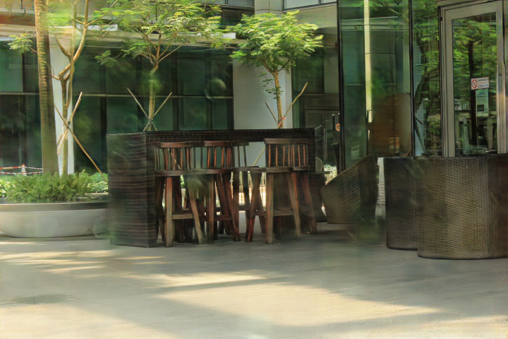
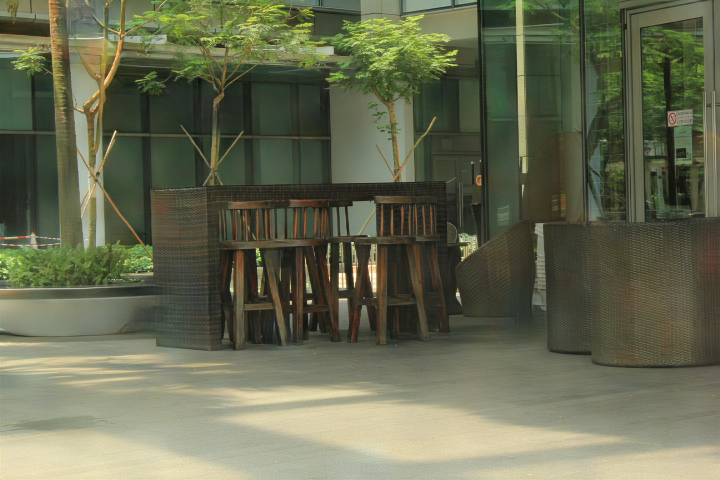
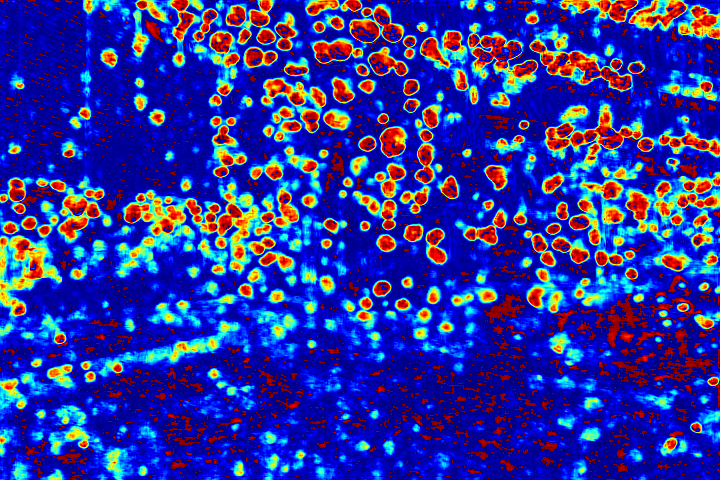
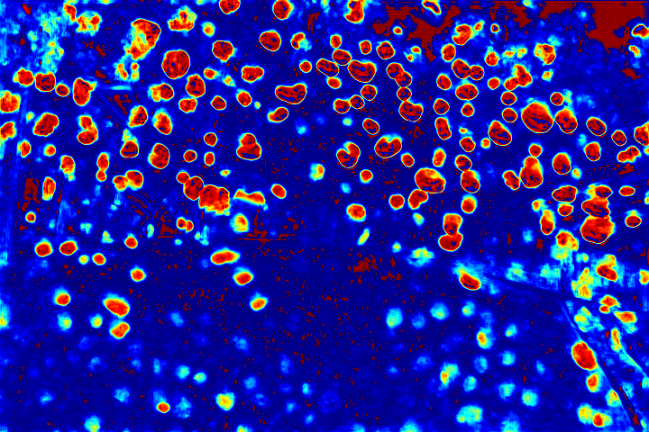
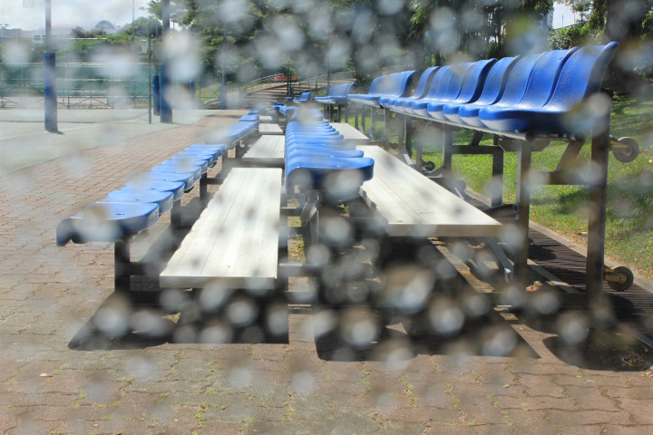
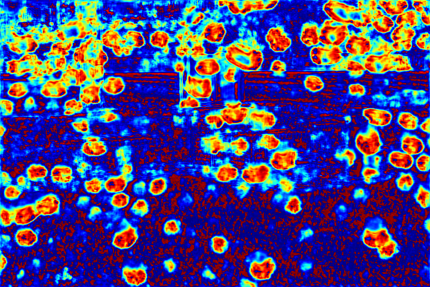

- Rui Qian
qianrui@pku.edu.cn - Robby T. Tan
tanrobby@gmail.com - Wenhan Yang
yangwenhan@pku.edu.cn - Jiajun Su
sujiajiu@pku.edu.cn - Jiaying Liu
liujiaying@pku.edu.cn
Introduction
Raindrops adhered to a glass window or camera lens can severely hamper the visibility of a background scene and degrade an image considerably. In this paper, we address the problem by visually removing raindrops, and thus transforming a raindrop degraded image into a clean one. The problem is intractable, since first the regions occluded by raindrops are not given. Second, the information about the background scene of the occluded regions is completely lost for most part. To resolve the problem, we apply an attentive generative network using adversarial training. Our main idea is to inject visual attention into both the generative and discriminative networks. During the training, our visual attention learns about raindrop regions and their surroundings. Hence, by injecting this information, the generative network will pay more attention to the raindrop regions and the surrounding structures, and the discriminative network will be able to assess the local consistency of the restored regions. This injection of visual attention to both generative and discriminative networks is the main contribution of this paper. Our experiments show the effectiveness of our approach, which outperforms the state of the art methods quantitatively and qualitatively.
Network Architecture

Fig.1 The architecture of our proposed attentive GAN.The generator consists of an attentive-recurrent network and a contextual autoen- coder with skip connections. The discriminator is formed by a series of convolution layers and guided by the attention map.
Experimental Results
The proposed method is implemented by PyTorch on four Nvidia Titan-XP GPUs. We compare our method with Eigen’s method [1], Pix2pix-cGAN [2], You.et al.'s video based raindrop removal method [3, 4, 5].
Qualitative Evaluation:
 |
||||
|  |  | |||
| (a)Ground Truth | (b)Raindrop Image | (c)Eigen [1] | (d)Pix2pix [2] | (e)Our Method |
Fig.2 Results of comparing a few different methods. From left to right: ground truth, raindrop image (input), Eigen13 [1], Pix2Pix [2] and our method. Nearly all raindrops are removed by our method despite the diversity of their colors, shapes and transparency.
 |
||
| (a)Raindrop Image | (b)Pix2pix [2] | (c)Our Method |
Fig.3 A closer look at the comparison between Pix2Pix’s outputs and ours. Ours have less artifacts and better restored structures.
 |
||||
| (a)Ground Truth | (b)Raindrop Image | (c)You13 [3] | (d)You14 [4] | (e)Our Method |
Fig.4 Comparasion with methods of raindrop removal from video [3, 4] in You.et al.’s dataset [6].
Our method uses a single image, while You.et al.’s [3, 4] use video.
| (a)Input Squence 1 | (b)Input Squence 2 | (c)Input Squence 3 |
| (a)You16 [5] | (b)You16 [5] | (c)You16 [5] |
| (a)Our Method | (b)Our Method | (c)Our Method |
Fig.5 Comparasion with methods of raindrop removal from video [5] in You.et al.’s dataset [6]. Our method uses a single image, while You.et al.’s [5] use video. No ground-truths are provided.
Quantitative Evaluation:
Table 1 shows the quantitative comparisons between our method and other existing methods: Eigen13 [1], Pix2Pix [2]. As shown in the table, compared to these two, our PSNR and SSIM values are higher. This indicates that our method can generate results more similar to the groundtruths. We also compare our whole attentive GAN with parts of our own network: A (autoencoder alone without the attention map), A+D (non-attentive autoencoder plus non-attentive discriminator), A+AD (non-attentive autoencoder plus attentive discriminator). Note that, our whole attentive GAN can be written as AA+AD (attentive autoencoder plus attentive discriminator). As shown in the evaluation table, AA+AD performs better than the other possible configurations. This is the quantitative evidence that the attentive map is needed by both the generative and discriminative networks.
| Metric\Method | Eigen[1] | Pix2pix[2] | A | A+D | A+AD | Proposed |
|---|---|---|---|---|---|---|
| PSNR | 28.59 | 30.14 | 29.25 | 30.88 | 30.60 | 31.57 |
| SSIM | 0.6726 | 0.8299 | 0.7853 | 0.8670 | 0.8710 | 0.9023 |
Table 1. PSNR(dB) and SSIM comparison of results from different methods and possible configurations of our network.
Visualization of Attention Map:
We show the visualizations of our novel attentive-recurrent network in this part. We set the number of time steps to be 4. With the increasing of time step, our network focuses more and more on the raindrop regions and relevant structures.
|  | ||||
| (a)Raindrop Image | (b)Time Step = 1 | (c)Time Step = 2 | (d)Time Step = 3 | (e)Time Step = 4 |
| (a)Raindrop Image | (b)Time Step = 1 | (c)Time Step = 2 | (d)Time Step = 3 | (e)Time Step = 4 |
|  | ||||
| (a)Raindrop Image | (b)Time Step = 1 | (c)Time Step = 2 | (d)Time Step = 3 | (e)Time Step = 4 |
| (a)Raindrop Image | (b)Time Step = 1 | (c)Time Step = 2 | (d)Time Step = 3 | (e)Time Step = 4 |
| (a)Raindrop Image | (b)Time Step = 1 | (c)Time Step = 2 | (d)Time Step = 3 | (e)Time Step = 4 |
|  | ||||
| (a)Raindrop Image | (b)Time Step = 1 | (c)Time Step = 2 | (d)Time Step = 3 | (e)Time Step = 4 |
|  | ||||
| (a)Raindrop Image | (b)Time Step = 1 | (c)Time Step = 2 | (d)Time Step = 3 | (e)Time Step = 4 |
Fig.6 Visualization of the attention map generated by our novel attentive-recurrent network. With the increasing of time step, our network focuses more and more on the raindrop regions and relevant structures.
References
[1] D. Eigen, D. Krishnan, and R. Fergus. Restoring an image taken through a window covered with dirt or rain. In Proceedings of the IEEE International Conference on Computer Vision, pages 633–640, 2013.
[2] P. Isola, J.-Y. Zhu, T. Zhou, and A. A. Efros. Image-to-image translation with conditional adversarial networks. arXiv preprint arXiv:1611.07004, 2016.
[3] S. You, R. T. Tan, R. Kawakami, and K. Ikeuchi. Adherent raindrop detection and removal in video. In Proceedings of the IEEE Conference on Computer Vision and Pattern Recognition, pages 1035–1042, 2013.
[4] S. You, R. T. Tan, R. Kawakami, Y. Mukaigawa, and K. Ikeuchi. Raindrop detection and removal from long range trajectories. In Asian Conference on Computer Vision, pages 569–585. Springer, 2014.
[5] S. You, R. T. Tan, R. Kawakami, Y. Mukaigawa, and K. Ikeuchi. Adherent raindrop modeling, detectionand removal in video. IEEE transactions on pattern analysis and machine intelligence, 38(9):1721–1733, 2016.
[6] S. You. http://users.cecs.anu.edu.au/ ̃shaodi.you/CVPR2013/Shaodi_CVPR2013.html.